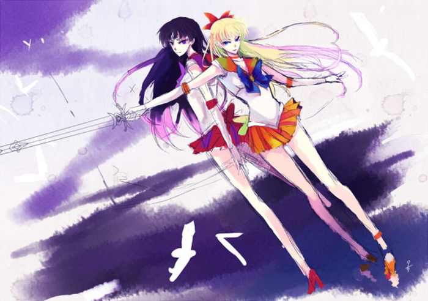

Fragile Cor: Я всегда буду любить тебя, мой падший ангел

Жанр: лирика (рассказ)
О произведении: Мы всю дорогу разговаривали. Я и Амелия. Два последних часа мы просто обсуждали школьные будни...
Скачать (авторская ссылка)
Мы всю дорогу разговаривали. Я и Амелия. Два последних часа мы просто обсуждали школьные будни. В этом году мы заканчивали последний класс, и вот только сейчас, под конец августа мы решили съездить в колледж, о котором давно мечтали. У нас с Амелией сложились очень крепкие отношения. Мы вместе с самого детства. Всё началось с того, что я была очень нелюдимым ребенком. Родители считали порой, что со мной что-то не так: я не общалась с ребятами, особой активностью не отличалось. Врачи прогнозировали, что всё это пройдет…и не ошиблись. И тогда, в моей жизни появилась Амелия: как-то русоволосая девчушка лет 7 подбежала ко мне, когда я направлялась на очередной сеанс к психологу.
- Привет!
Её лучезарность и оптимизм меня затронул. Хоть я и считалась «не пригодной для социального общения», но для своего 7-ми летнего возраста, я была достаточно восприимчива и находчива:
- Мы знакомы?
- Нет, но я видела, как ты брала книги из библиотеки. Так что, можно сказать, что несколько раз мы уже виделись.
Я улыбнулась, но отвечать ничего не стала.
- Меня зовут Амелия. А тебя как? – она протянула мне руку, ожидая рукопожатия.
Девчонка была настроена серьезно, но я не могла оставаться дольше, иначе бы пропустила сеанс.
- Я – Оливия… Извини, но я должна идти.
Она неожиданно схватила меня за руку:
- Пожалуйста, не уходи. Мне очень скучно. Кристина еще не скоро вернется.
Минуту поразмыслив, я решила остаться. Мне стало жаль девочку. Тем более, на улице она гуляла одна и, наверное ей было действительно не по себе:
- А что ты здесь делаешь одна? Кристина - твоя мама?
- Нет, она моя мачеха. Мой отец так сказал. Вообще, она мне не особо нравится, но он её любит…
- Ясно…А что ты делаешь?
- Играю в игру. – печально отозвалась новая подружка.
- Какую?- меня это заинтересовало. Это показалось мне намного интересней, чем сеанс у психоаналитика.
Амелия улыбнулась и взяла меня за руку:
- Пойдем, объясню правила…
С этого момента мы всегда были вместе. Мы казались такими разными: я - ботаничка, которая всегда избегала лишнего общества, вечеринок и такого рода мероприятий. Амелия же - задорная и слегка рискованная девчонка, которая любила веселиться и умела постоять за себя. Порой я сама не могла понять, почему мы лучшие друзья, но мне это безумно нравилось.
Мои родители всегда были рады Амелии и считали ее второй дочерью, а вот мачеха Кристина не особо любила меня. Она считала, что это я плохо влияю на ее падчерицу. Майкл же, отец Амелии, ничего не имел против нашей дружбы, даже наоборот.
Однажды, когда у нас был очередной спортивный конкурс и меня выдвинули на роль отстаивающей честь нашей школы, все ребята были против: «Ты обязательно проиграешь, Мэдлин», «У тебя же нет никакого таланта в спорте», «Ты - неудачница»…
И только Амелия меня поддерживала. Она говорила, что бы я не обращала внимание на них, потому что они сами ничего не могут. Но я понимала, что отчасти они были правы, и спортивных достижений у меня никогда не было.
За пару часов до соревнований, мы разговаривали по телефону:
- Не бойся, Оли, я уверена, что ты выиграешь.
Ее голос ободрял, но, к сожалению, ничем не мог помочь.
- Я не уверена, Амели… Я не смогу. Если я проиграю, то все будут издеваться надо мной до конца школы. А учителя разочаруются. И тогда школа потеряет свою репутацию.
- Эй, эй, эй, - остановила мой поток мыслей Амели,- у тебя все получится! Тебе всего лишь нужно пробежать эстафету, но это не так сложно, как тебе кажется. Просто верь в то, что делаешь, и все т будет хорошо.
- Я не знаю…- протянула я.
- Я приду тебя поддержать.
- Спасибо… Ладно, мне пора. Пока.
И на этом наш разговор завершился. Еще час я раздумывала над тем, идти или нет, и все таки я испугалась… И не пошла. Мне было так плохо. Я весь вечер пыталась дозвониться Амели, но потерпела неудачу. С другой стороны, ей бы было неприятно знать что ее подруга- трусиха.
На следующий день, я ожидала, что вся школа будет твердить какой я лузер, но ничего такого не произошло. Я встретила свою лучшую подругу возле кабинета директора.
- Ох, а вот и наша победительница!
Миссис Роуз обняла меня, а потом еще раз поздравила. Я была удивлена. После этого, Амелия ехидно улыбнулась и кое-что протянула:
- Диплом о первом месте на городском соревновании?? Но как?? Я же ведь не ходила!
- Это неважно, Оливия. Это твое.
Тут до меня дошло:
- Так ты бежала за меня? …Но почему?
- Оли, ты моя лучшая подруга. После того, как я поняла, что ты не придешь, я не могла допустить, чтобы потом над тобой в школе издевались. Я решила пробежать за тебя…и выиграла.
Она говорила это очень спокойно, но весело. Я не знала, как ее благодарить, но обняла ее.
- Спасибо, Амели, ты настоящий друг!
Вот так обычно она всегда меня выручала: конкурсы, поручения. А я взамен утешала ее в те разы, когда очередной парень разбивал ей сердце. Вернее как… она сама их меняла как перчатки. В этом мы были совсем разные: мне хотелось светлой и чистой любви, а ей просто повеселиться. Вот так. Две разные и такие непохожие, но лучшие подруги.
Сейчас, когда мы ехали по затемненной магистрали Манхеттена, она уснула, облокотившись на мое плечо. Так трогательно. Ее русоволосые кудри были хорошо уложены. Не то, что мои каштановые пряди.
Я помню, как месяц назад Амелия устроила вечеринку и позвала несколько подружек. В их числе была и я. Её одноклассницы не особо хорошо приняли меня. И тогда…она выпроводила их. Больше с ними она не общалась. Из-за меня. Иногда мне казалось, что она любила меня больше чем я ее.
В тот день, мы хорошо провели время, обсуждая моменты личной жизни, просматривая совместные фотографии:
- Как быстро летит время… - грустно улыбнулась она. – Можно я тебе кое в чем признаюсь?
Она внимательно посмотрела на меня.
- Конечно – кивнула я головой.
Она слегка коснулась моих волос и погладила их:
- Я всегда немного завидовала тебе, Оли.
Амели заметила мое удивление, но продолжила:
- Нет, нет. В хорошем смысле. Я всегда хотела быть такой красивой, - она провела указательным пальцем по моему лицу, - такой хрупкой, - ее пальцы сделали «волну» по моей руке. У меня пробежали мурашки,- ты идеальна, Оли.
Потом она встала и принесла мороженое.
Мы продолжили веселиться, не вспоминая о том, что она сказала.
Но когда я осталась у нее ночевать, я так и не смогла уснуть.
Я смотрела на нее и видела перед собой необычайно красивую девушку. И не понимала, чему ей было «завидовать». Моим веснушкам? Или курносому носу? Или непослушным локонам? В моей внешности ничего не было особенного. Абсолютно. И в характере ничего.
Так ничего и не прояснив, я все таки смогла заснуть.
И сейчас, в час ночи, я попыталась сделать это. В машине. Где есть я, Амелия и ее шофер.
Ее отец достаточно богатый человек и жили они безбедно. Так что, это он одолжил нам машину с шофером для поездки в колледж. А колледж находился далеко. Сутки, чтобы доехать, не меньше. Мы выехали пораньше, чтобы прибыть туда завтра утром.
- Оли, у меня есть потрясающая новость! – воскликнула как то Амели, когда нам было лет по 14.
Я, делая очередную домашнюю работу, не сразу откликнулась:
- Какая?
Она бросила брошюру на стол, прямо перед моим носом:
- Колледж Айброун! Это то, куда мы пойдем после школы.
Она вся светилась.
- Но почему туда?- не поняла я.
- Как почему? Он находится недалеко от побережья, как мы и мечтали, еще ты сможешь поступить на врача, а я учиться на фотографа. К тому же, там отличное обучение и ребята.
Она подмигнула мне.
- Ладно, ладно…мне нравится эта идея. – я решила сдаться без боя.
- Значит, согласна?- предвкушая победу, заинтересованно смотрела Амелия на меня.
Я кивнула.
Она подбежала ко мне и крепко обняла.
Как было хорошо. Казалось, до этого момента нужно было ждать еще долго, но вот сейчас мы едем туда и через некоторое время сможем насладиться студенческой жизнью.
- Мисс Мэдлин, через три часа мы прибудем на место, а пока можете последовать примеру Колинз, - сказал шофер и указал на спящую Амелию.
На часах было 3.05. За окном темно. Мы ехали быстро, на дороге было пусто. Немного посмотрев на небо, я все таки пробудила в себе острое желание поспать, и морфий окутал меня.
Все что я помню дальше: треск, шум, крик, кто то позвал меня по имени, но я не хотела просыпаться. Нет, еще чуть чуть…пожалуйста.
Но нет. Я открыла глаза. Вокруг было прекрасно: цветущий зеленый сад, хорошая и теплая погода. Я лежу на траве и смотрю на облака. Где то неподалеку протекает ручей. Беспощадное солнце обжигает мне глаза, но я не могу пошевелиться. Мое тело как вата, ничем не могу двигать. Я пролежала так минут 10, стараясь не заснуть, потому что очень хотелось спать.
- Оли? – удивленно воскликнул голос, где-то из за угла. Кто-то сильно удивился моему присутствию здесь. Ко мне стремительно приближалась фигура. Только потом я поняла кто это. Амелия. Слава Богу, она тоже здесь.
- Амелия? - мне жутко хотелось встать и обнять ее.
Но она отклонилась. Ее русые волосы развивались на ветру и хлопковое платье в котором она была в машине было кое где порвано, но не сильно. Она все так же была прекрасна…
- Не надо, Оливия. Не прилагай усилий. – мягко сказала она.
- Но, Амели, я не могу пошевелиться! Где мы? Что вообще творится? Мы что, уже приехали в колледж? – пыталась я посмотреть по сторонам. Но безуспешно.
- Не беспокойся, милая. – она погладила меня по щеке. – Все хорошо.
Я чувствовала, что что-то не так, и то, что лицо выдает ее ложь:
- Амели, я знаю, что не все в порядке.
Она посуровела:
- Пожалуйста, не спрашивай. Тебе нужно просто заснуть. Потом все будет хорошо.
Но на ее щеке сверкнула слеза.
Одно усилие. Боль прожгла меня. Я сумела поднять руку и вытереть ее слезу. Она нежно прижала мою руку к своей:
- Тебе нельзя двигаться, Оли. Прошу тебя.
- Ты знаешь, что я не успокоюсь пока не узнаю что происходит.
Амелия внимательно всмотрелась в мои искренние глаза и не сдержавшись сказала очень тихо:
- Прости, Оли, это моя вина… Прости. Я не должна была звать тебя туда. В колледж. Мы не должны были быть вместе в той машине.
Я прервала ее:
- Я ничего не понимаю. Почему?
- Потому что… Оли, ты же знаешь, как сильно я тебя люблю. Я не могла допустить что бы что то причинило тебе боли.
Она заплакала и начала целовать мою руку.
Меня прожгло изнутри. Я тоже заплакала.
- Мы попали в аварию, Оливия…
- Что? Как такое могло произойти?- удивилась я и попыталась поднять голову. Сердце бешено забилось, но мне удалось привстать.
Мы обнялись.
- Но мы же живы, это самое главное. – попыталась я утешить подругу.
Она отстранилась от меня:
- Нет, милая, мое время уже пришло…
Амелия грустно улыбнулась.
Она все плакала и плакала.
- Но как? Амелия, мы здесь с тобой вдвоем! – я посмотрела вокруг и никого. Только прекрасный сад.
- Вот именно поэтому ты должна вернуться обратно…Оливия, ты должна, понимаешь? А я нет…
- Я без тебя не уйду.- решительно сказала я.
- Уйдешь. – сделала она небольшую паузу и снова прикоснулась ко мне. – Понимаешь, ты нужна всем им, - она показала мне фотографию, где были изображены разные люди.
- Кто это?
- Это твое будущее, Оли.
- Нет. Мое будущее здесь и с тобой!
- Ты должна жить, понимаешь ты или нет? – она сделала небольшую паузу, а потом продолжила, -Я прожигала свою жизнь, но ни о чем не жалею. Ты- лучшее что в ней было. Я очень тебя люблю, но если ты останешься здесь, то никто не сможет о них позаботиться. – указывая на людей, она поцеловала меня в лоб и смахнула слезу.
- Я…тебя….люблю…Амелия…- я крепко прижала ее к себе. – Почему ты…не я?... Я же неудачница…
- Это не так! - возмутилась подруга,- ты можешь многое, просто никогда, слышишь? никогда не позволяй кому то сомневаться в тебе! Я горжусь тобой, милая…
Я чувствовала, как кто то зовет меня:
- Кто это? Здесь кто то еще есть?
- Нет,- отпустила Амелия меня. – Это твои близкие…Тебе пора.
- Я не хочу…
- Просто закрой глаза. Тебе нужно заснуть.
- Но…
- Я буду рядом с тобой. Всегда. – сказала Амели и помогла лечь.
Все что я запомнила, это ее слова на последок: «Прощай, подружка».
…
Я открыла глаза и увидела своих родителей.
- Она пришла в себя, доктор! Пришла в себя! – закричала от радости мама .
Никогда не понимала сколько людей меня любит и ценит, до того момента, как я попала в больницу. С тех пор, каждый день ко мне приходили знакомые, одноклассники, все кто только можно и желали выздоровления.
Что же касается моего будущего, то я поступила на медицинский. И спустя некоторое время приступила к своим обязанностям главного врача. Я долго и упорно училась, но достигла своей цели- сумела помочь людям.
Безусловно, я часто задавала себе вопрос: почему я осталась жива, а не моя лучшая подруга? Когда в ней всегда было намного больше жизни чем во мне, когда вокруг нее всегда царила гармония и доброта.
И я никогда, никогда не забывала об Амелии. Я знаю, что когда-нибудь мы встретимся, но сейчас она живет в моем сердце и ведет меня по правильному пути.
Спасибо, Амели!

![]()